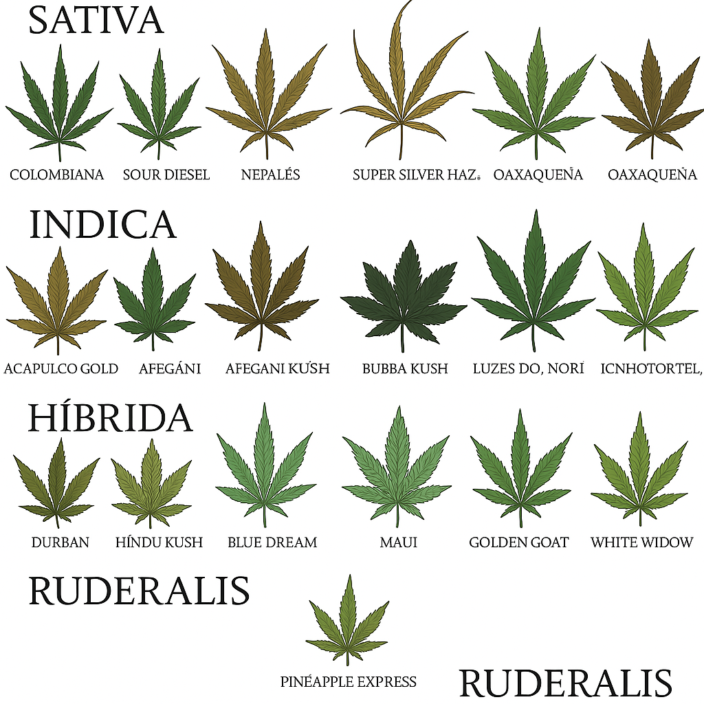
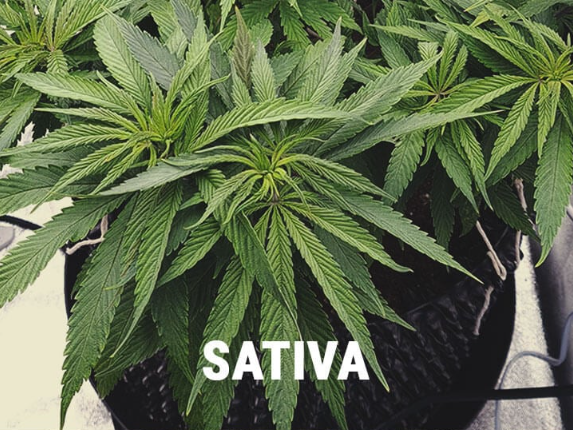
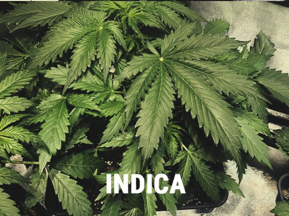
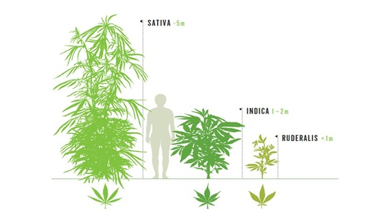

🧬 Tipos e Vertentes da Cannabis
A cannabis possui diversas classificações e variações, sendo as principais divididas em três grandes espécies: Cannabis sativa, indica e ruderalis. Além disso, há milhares de híbridos e linhagens desenvolvidas a partir do cruzamento entre essas espécies, com finalidades terapêuticas, recreativas e industriais.
🌿 Cannabis Sativa
A Cannabis sativa é uma planta de porte alto, com folhas finas e alongadas. Originária de regiões equatoriais como Colômbia, Tailândia e México, ela é conhecida por seus efeitos estimulantes, energizantes e criativos. Frequentemente recomendada para uso diurno, é utilizada no tratamento de depressão, fadiga e distúrbios do humor.
🌙 Cannabis Indica
A Cannabis indica tem origem nas regiões montanhosas da Índia, Afeganistão e Paquistão. Apresenta um porte mais baixo e folhas largas e escuras. Seus efeitos são relaxantes, sedativos e calmantes, sendo indicada para uso noturno ou em casos de insônia, dor crônica e ansiedade.
🌱 Cannabis Ruderalis
Menos conhecida, a Ruderalis é uma espécie menor e mais resistente, encontrada em regiões da Rússia e Europa Oriental. Tem baixa concentração de THC, porém floresce de forma automática, independentemente da luz (autoflorescente), sendo muito usada no desenvolvimento de híbridos para cultivo mais fácil.
🌿 Híbridos e linhagens
A maioria das plantas encontradas hoje são híbridas, ou seja, combinações genéticas de sativa e indica, balanceando efeitos e propriedades. Essas linhagens são desenvolvidas para maximizar benefícios específicos, seja para fins medicinais, recreativos ou industriais.
Exemplos famosos incluem:
- 🔋 Sour Diesel – híbrido com predominância sativa, energizante
- 🛌 Granddaddy Purple – híbrido com predominância indica, calmante
- ⚖️ Harlequin – rica em CBD, ideal para uso medicinal
🧪 Principais canabinoides
As propriedades da cannabis são resultado dos canabinoides, compostos químicos que interagem com o sistema endocanabinoide humano. Os principais são:
- 🔺 THC (Tetrahidrocanabinol) – responsável pelos efeitos psicoativos
- 💧 CBD (Canabidiol) – não psicoativo, com amplas aplicações medicinais
- 🌬️ CBN, CBG, THCV – outros compostos com efeitos terapêuticos em estudo
🧬 Terpenos e efeitos
Além dos canabinoides, os terpenos são compostos aromáticos presentes na cannabis que influenciam no sabor, aroma e efeitos da planta. Alguns exemplos:
- 🍋 Limoneno – cítrico, melhora o humor
- 🌲 Pineno – fresco, auxilia na concentração
- 🌸 Linalol – floral, promove relaxamento
📚 Curiosidades sobre os tipos de cannabis
- 🌏 A sativa cresce melhor em climas tropicais, enquanto a indica é ideal para regiões mais frias.
- 🧬 Existem mais de 2.000 linhagens registradas no mundo.
- 🔬 Pesquisas recentes indicam que o perfil químico é mais importante que o nome da linhagem.
- 🧠 O THC e o CBD agem em receptores diferentes no cérebro e no corpo.